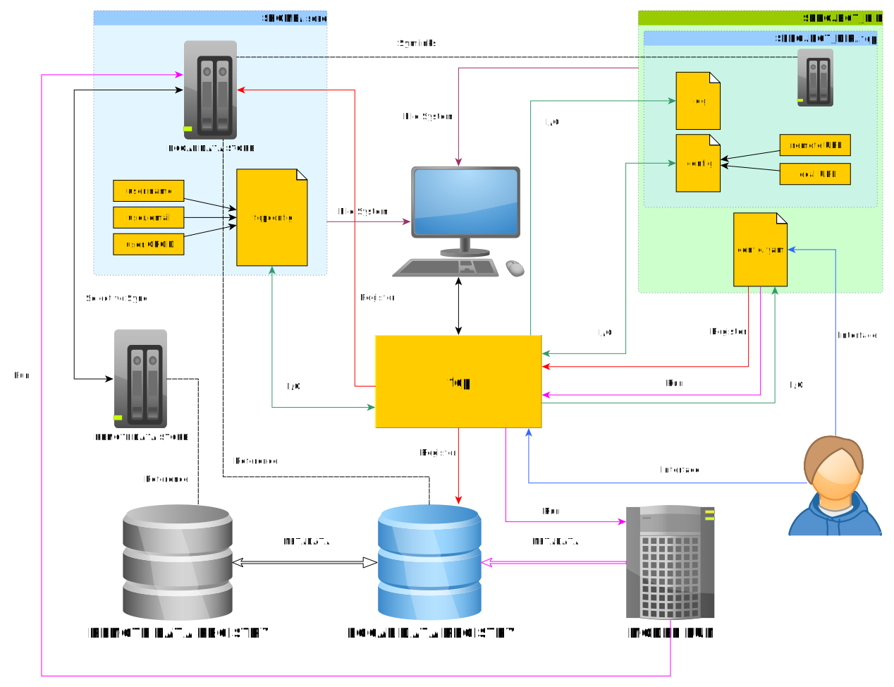

Proposal for an SCRC FAIR Data Pipeline Synchronisation Client Command Line Interface
In the following document I outline a proposal for the synchronisation system fair which aims to synchronise a local version of the SCRC FAIR Data pipeline registry. Much of this plan proposes using commands which mirror those contained within the git interface. My argument for this is it is an interface familiar to many already and so easy to learn.
Local cache
I use the term “local cache” to refer to the mirror of the .git folder created when initialising a repository. My current understanding is that there is to be a folder $HOME/.scrc however this creates the following issues:
Paths have a constant address that does not vary depending on where you are on the file system. This makes it easy to keep note of which files are being tracked. By having a
.gitfolder in each repository Git is able to easily produce reports for commands likegit statuswhich make sense as it can calculate where the user is in relation to.git, e.g.:
$ ls -a
. .git fair
$ git add fair/test_file
$ git status
On branch master
Changes to be committed:
(use "git restore --staged <file>..." to unstage)
new file: fair/test_file
$ cd fair
$ git status
On branch master
Changes to be committed:
(use "git restore --staged <file>..." to unstage)
new file: test_file
this would not be possible if the location was $HOME/.git.
The user might want to keep tracking cases separate, e.g. they may have two models and only want to handle one at a time. In this case having a
.fairfolder in each repository with a candidateconfig.yamlwould make sense.I would strongly oppose creating hidden folders in the user’s home area. Unless you have a clear uninstallation procedure that is not OS specific that removes this folder then you risk leaving orphaned directories. Whereas if the folder is created for a project then this is no longer an issue.
Initialisation
To ensure that the config.yaml location is always alongside a .fair folder, encourage users to use a command like:
$ fair init
which would make both. Police this by raising an exception if the config.yaml is not partnered with a .fair directory. Maybe even make a copy of config.yaml that is “packed” into .fair in case the two become separated, which would fall under:
$ fair reset config.yaml
use config.yaml to explicitly state you want to reset the config file, else by default this is ignored as it is not data.
Repository wide addition
Ideally data_store should work like .git in that it is a hidden container, I am aware the APIs will want to read from this location, could they perhaps read this hidden folder? If the user works with the original file and commits it then the hidden version would be updated anyway (again mirroring git). Could also even have the option to archive data in .fair to save space, retrieving when needed (again like git).
Assuming a data_store is constructed always relative to a config.yaml, allow the user to ultimately add anything in the repository for tracking:
fair add ./my_data/a_data_file.txt
this would copy the version into .fair/data_store/ and add it to tracking.
Configuration
Configure the user in a manner again alike to git:
$ fair config user.name "Kristian Zarebski"
$ fair config user.email "kristian.zarebski@ukaea.uk"
$ fair config user.orcid "0000-0002-6773-1049"
Status
No need to reinvent the wheel here, red for untracked and unstaged, green for staged.
Reset
Remove any staging set before push:
$ fair reset
use --hard to force versions to return to the last synced version:
$ fair reset --hard
Removing files
Again, alike to git have fair rm and fair rm --cached, to remove from tracking and the file system, or just tracking.